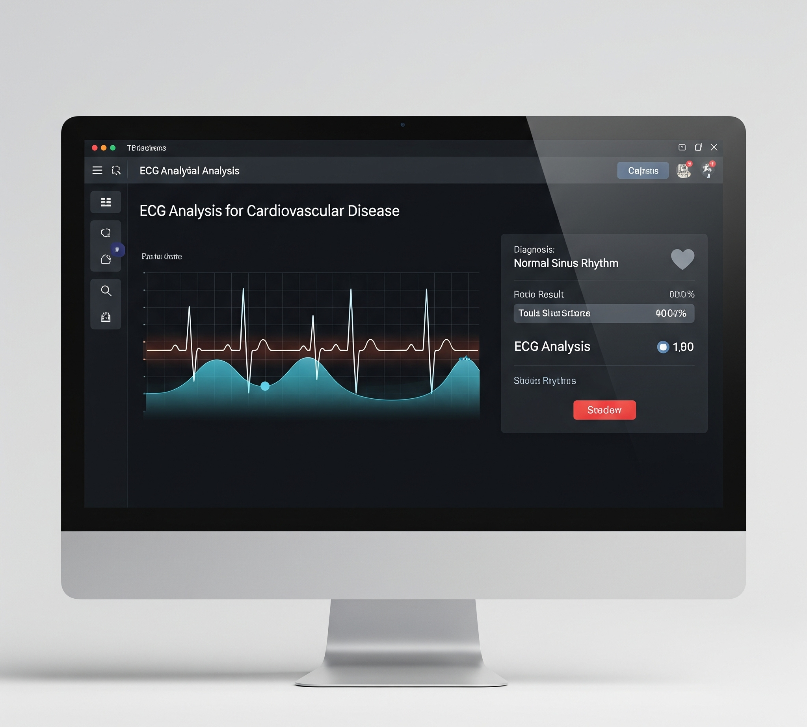

Cardiovascular Disease Detection
An ML model to classify heart conditions from ECG data, published in IEEE.
The Problem
Early and accurate detection of cardiovascular disease is critical for patient outcomes, but manual analysis of ECG signals can be time-consuming and subjective. Automated systems can provide faster, more consistent results.
My Solution
I developed a complete machine learning pipeline to classify different types of cardiovascular diseases using ECG data. The project involved intensive data preprocessing to clean noisy signals, feature engineering to extract meaningful patterns (like R-R intervals and QRS complex duration), and training classification models. The final model, based on a decision tree algorithm, demonstrated high accuracy in identifying various heart conditions, and the research was accepted for publication in an IEEE conference.
Challenges & Lessons Learned
The primary challenge was the high level of noise in raw ECG data, which required sophisticated filtering techniques. This project provided deep insights into the end-to-end process of building a medical diagnostic tool, from data acquisition and cleaning to model validation and the formal academic publication process.